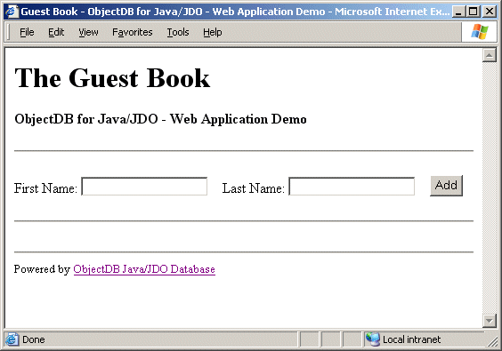

Guest Book - A Minimal JDO Database Web Application
Introduction
The Guest Book sample demonstrates using ObjectDB for Java/JDO in a minimal web application with a single JSP web page.
Initially, an empty guest book with a brief form is displayed:

Every new registration (filling the form and pressing Add) extends the list of guests:
The list of guests is stored by the web application, using JDO, in an ObjectDB database.
Web Application File Structure
The entire web application is located under the jdo-guestbook directory, in a standard file structure for a Java web application.
For example, the web application descriptor file (web.xml) containing general definitions of the web application, is located as expected in the WEB-INF directory:
Java classes (defined in Guest.java and WebAppMgr.java) as well as other resources required at runtime (JDO metadata defined in package.jdo), are located under WEB-INF/classes in paths which reflect their packages.
Essential jar files for using ObjectDB (odbfe.jar and jdo.jar) are located in the WEB-INF/lib directory (could be located in the server's global lib directory to enable using ObjectDB in more than one web application).
Details of all the guests are stored in the guestbook.odb database file. Initially this database file does not exist - it is created on first guest registration.
Finally, index.jsp implements the only web page in this demo, which displays the list of guests and manages registration of new guests.
The Persistence Capable Class
A single persistence capable class, guestbook.pc.Guest, is sufficient to represent the data of this simple application.
Every Guest instance represents a registered guest and holds its details in three persistent fields:
WEB-INF/classes/guestbook/pc/Guest.java
// ObjectDB for Java/JDO - The Guest Book - A Mimimal JDO Based Web Application
// Copyright (C) 2001-2003, ObjectDB Software. All rights reserved.
package guestbook.pc;
import java.text.SimpleDateFormat;
import java.util.Date;
/**
* The Guest class represents a single guest in the guest book.
*/
public class Guest {
// Static Date Formatter:
private static SimpleDateFormat formatter =
new SimpleDateFormat("MMM dd, yyyy");
// Persistent Fields:
private String firstName;
private String lastName;
private Date date;
private int dummy;
// Constructors:
public Guest() {}
public Guest(String firstName, String lastName) {
this.firstName = firstName;
this.lastName = lastName;
this.date = new Date();
}
// String Representation:
public String toString() {
return firstName + " " + lastName + " (" + formatter.format(date) + ")";
}
}
|
A package.jdo file is required to define the Guest class as persistence capable:
WEB-INF/classes/guestbook/pc/package.jdo
<?xml version="1.0" encoding="UTF-8"?>
<!DOCTYPE jdo SYSTEM "http://java.sun.com/dtd/jdo_1_0.dtd">
<jdo>
<package name="guestbook.pc">
<class name="Guest" />
</package>
</jdo>
|
JSP Page and Web Application Manager
The index.jsp page displays the list of guests and manages registration of new guests:
index.jsp
<%@page import="javax.jdo.*,java.util.Iterator,guestbook.*,guestbook.pc.*" %>
<%@page isThreadSafe="false" %> <%-- more efficient and safe in
a website which is not too loaded --%>
<%! static { WebAppMgr.enhanceAll(); } %>
<html>
<head><title>
Guest Book - ObjectDB for Java/JDO - Web Application Demo
</title></head>
<body> <%
// Obtain a PersistenceManager instance:
PersistenceManager pm = WebAppMgr.getPersistenceManager(application);
try {
// Handle a filled form (if any):
String firstName = request.getParameter("firstName");
String lastName = request.getParameter("lasstName");
if (firstName != null && lastName != null)
{
pm.currentTransaction().begin();
pm.makePersistent(new Guest(firstName,lastName));
pm.currentTransaction().commit();
} %>
<h1>The Guest Book</h1>
<p><b>ObjectDB for Java/JDO - Web Application Demo</b></p>
<hr>
<form method="POST" action="index.jsp">
First Name: <input type="text" name="firstName">
Last Name: <input type="text" name="lasstName">
<input type="submit" value="Add">
</form>
<hr><ol> <%
// Display the list of guests:
Extent extent = pm.getExtent(Guest.class, false);
Iterator itr = extent.iterator();
while (itr.hasNext()) { %>
<li> <%= itr.next() %> </li> <%
}
extent.close(itr); %>
</ol><hr> <%
} finally {
// Close the PersistenceManager:
if (pm.currentTransaction().isActive())
pm.currentTransaction().rollback();
pm.close();
} %>
<font size="-1">Powered by
<a href="http://www.objectdb.com" target="_blank">ObjectDB Java/JDO Database</a>
</font>
</body>
</html>
|
When the page is first loaded, the WebAppMgr.enhanceAll() static method is invoked in order to ensure on the fly JDO enhancement of all the persistence capable classes.
A PersistenceManager instance which represents a connection to the database is obtained using the WebAppMgr.getPersistenceManager() static method. A try-finally block ensures closing the PersistenceManager on any case, including on errors, to avoid lock problems.
If firstName and lastName parameters are specified (the page responses to the form) - a new Guest instance is constructed and stored into the database.
The list of existing Guest instances is retrieved from the database using the class's Extent.
Common services (which may be shared by more than one JSP page) are defined in the WebAppMgr class:
WEB-INF/classes/guestbook/WebAppMgr.java
// ObjectDB for Java/JDO - The Guest Book - A Mimimal JDO Based Web Application
// Copyright (C) 2001-2003, ObjectDB Software. All rights reserved.
package guestbook;
import java.io.File;
import java.util.Properties;
import javax.jdo.*;
import javax.servlet.*;
/**
* This class handles JDO enhancement and PersistenceManager allocations.
*/
public class WebAppMgr {
/**
* Ensures on the fly JDO enhancement of persistence capable classes.
* NOTE: NO PERSISTENCE CAPABLE CLASS IS MENTIONED IN THIS CLASS!
* (otherwise classes might be loaded into JVM before enhancement).
*/
public static void enhanceAll() {
if (!enhanced) {
com.objectdb.Enhancer.enhance("guestbook.pc.*");
enhanced = true;
}
}
private static boolean enhanced; // indicates if already been done
/**
* Obtains a PersistenceManager instance.
*/
public static PersistenceManager getPersistenceManager(
ServletContext context) {
// Prepare an application scope PersistenceManagerFactory when needed:
if (pmf == null) {
Properties properties = new Properties();
properties.setProperty(
"javax.jdo.PersistenceManagerFactoryClass",
"com.objectdb.jdo.PMF" // always the same for ObjectDB
);
properties.setProperty(
"javax.jdo.option.ConnectionURL",
context.getRealPath("/WEB-INF/db/guestbook.odb")
// path is relative to web application root
);
pmf = JDOHelper.getPersistenceManagerFactory(properties);
}
// Return a request scope PersistenceManager instance:
return pmf.getPersistenceManager();
}
private static PersistenceManagerFactory pmf; // holds a global PMF
}
|
Web Application Deployment
To install and run the guest book sample you will need:
-
Any edition of ObjectDB for Java/JDO (you can download the
Free Database Edition
which also includes this Guest Book sample).
-
Any J2EE Application Server or Web Server (IBM Websphere, Bea WebLogic, Borland Application Server, Sun One Server, JBoss, Apache Tomcat, Caucho Resin, Orion, Macromedia JRun, Jetty, etc.).
Step by step instructions for Apache Tomcat:
-
Download and install Apache Tomcat (http://jakarta.apache.org/tomcat/).
-
Copy the entire jdo-guestbook directory into <TOMCAT_HOME>/webapps
(from <OBJECTDB_HOME>/samples).
-
Copy ObjectDB and JDO jar files (from <OBJECTDB_HOME>/lib) into <TOMCAT_HOME>/webapps/jdo-guestbook/WEB-INF/lib/ (application scope) or into <TOMCAT_HOME>/shared/lib/ (server scope).
-
Start the web server by running startup.sh (Unix) or startup.bat (Windows)
(located in <TOMCAT_HOME>/bin).
-
Open a browser at http://localhost:8080/jdo-guestbook/.
Step by step instructions for Caucho Resin:
-
Download and install Caucho Resin (http://www.caucho.com/download/).
-
Copy the entire jdo-guestbook directory into <RESIN_HOME>/webapps
(from <OBJECTDB_HOME>/samples).
-
Copy ObjectDB and JDO jar files (from <OBJECTDB_HOME>/lib) into <RESIN_HOME>/webapps/jdo-guestbook/WEB-INF/lib/ (application scope) or into <RESIN_HOME>/lib/ (server scope).
-
Start the web server, for example by running httpd.sh (Unix) or httpd.exe (Windows)
(located in <RESIN_HOME>/bin).
-
Open a browser at http://localhost:8080/jdo-guestbook/.
Instructions for NetBeans / Sun One Studio developers:
-
Copy ObjectDB and JDO jar files (from <OBJECTDB_HOME>/lib) into
<OBJECTDB_HOME>/samples/jdo-guestbook/WEB-INF/lib/.
-
Mount the jdo-guestbook directory
(located in <OBJECTDB_HOME>/samples).
-
Select and execute index.jsp (by F6, context menu, etc.).
Copyright (C) 2001-2004 by ObjectDB Software. All rights reserved.
|